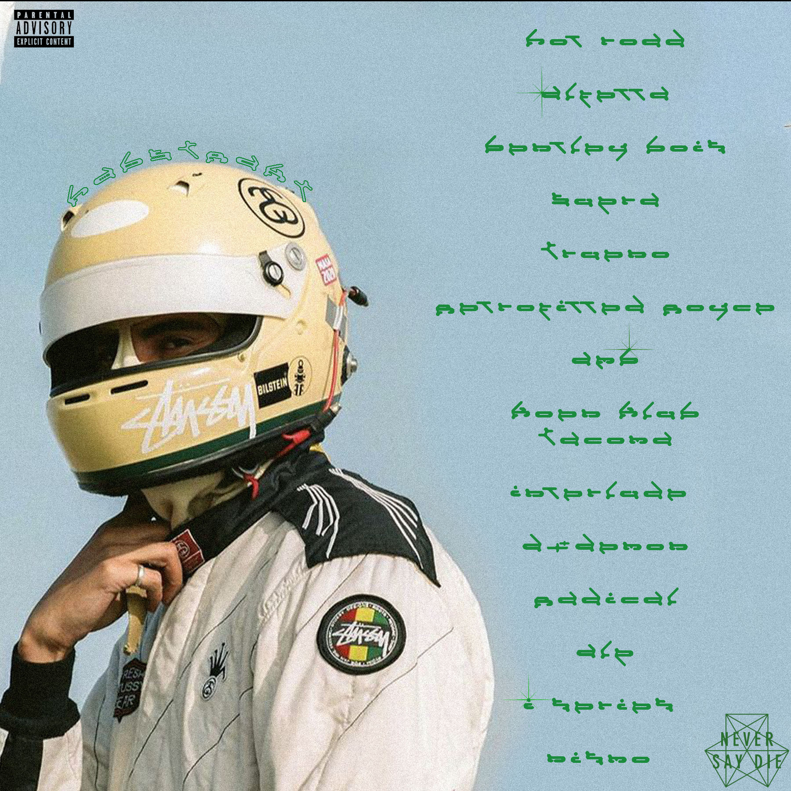

<link rel="stylesheet" href="asset/css/style.css">

<header>
  <nav class="navbar">
    <div class="nav-title">
      Portfolio IIM 2022
    </div>
    <ul class="nav-links">
      <li class="nav-link">
        <a href="index.html">Accueil</a>
      </li>
      <li class="nav-link">
        <a href="page-créa-design.html">Créa/design</a>
        <li class="nav-link">
          <a href="page-JV.html">JV</a>
          <li class="nav-link">
            <a href="page-communication.html">Communication</a>
            <li class="nav-link">
              <a href="page-web-developpement.html">Web Developpement</a>
              <li class="nav-link">
                <a href="page-3D.html">3D</a>
    </ul>
  </nav>


<section class="section section-cards-flex">
    <div class="card">
        
        <divc class="card-content">
            <h3>Axe Créa/Design</h3>
<p28>Le but ici était d'imaginer des visuels alternatifs pour un artiste de notre choix, et de les réaliser en utilisant les outils mis a diposition
  sur le logiciel photoshop, voici ici la tracklist présent au verso de cet album fictif.</p28>
</section>


<section class="section section-cards-flex">
  <div class="droite">
      
      <divc class="card-content-recto">
<p2>Le recto de la cover de cet album fictif. Il etait important ici de rendre cohérent les éléments présents sur le visuel avec l'empreinte visuelle de notre artiste.
 Ici, j'ai essayé de continuer l'angle automobile assez présent dans les dernieres production du dj habstrakt</p2>
</section>


<footer>
<p8>© 2022 IIM</p8>
</footer>


</div>
</div>  